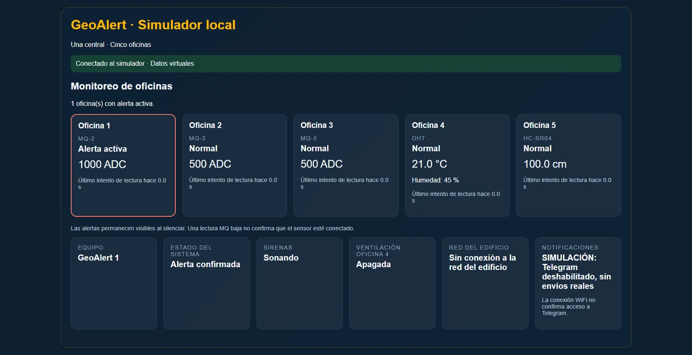

Tecnología que responde.
Desarrollamos prototipos que integran sensores, software y automatización para observar lo que ocurre en un espacio y responder a tiempo.
Conoce Geo AlertQuiénes
somos.
TechSolutions desarrolla proyectos de IoT y automatización. Geo Alert es nuestro proyecto de monitoreo por zonas.
- Misión
- Desarrollar soluciones tecnológicas que conviertan las lecturas del entorno en información clara y acciones oportunas.
- Visión
- Consolidarnos como un equipo que crea tecnología conectada útil, accesible y adaptable a distintos espacios.
- Objetivos
- Integrar hardware y software en prototipos que se puedan probar.
- Hacer que el estado de cada zona y sus alertas sean fáciles de entender.
- Documentar y validar cada prototipo antes de ampliar su alcance.
Proyectos
Geo Alert.
Geo Alert es un prototipo de monitoreo basado en ESP32 para una maqueta de cinco oficinas. Cada zona conserva su propio estado y comparte los actuadores del sistema.

Monitoreo por zona
Sensores de gas, temperatura, humedad y distancia alimentan las reglas de cada oficina.
Panel y diagnóstico
El panel web muestra lecturas, estados y eventos recientes de las cinco oficinas.
Respuesta ante alertas
El prototipo utiliza señales visuales y sonoras. Puede enviar avisos por Telegram cuando se habilita la conexión.
Preguntas
frecuentes.
¿A qué se dedica TechSolutions?
Desarrollamos prototipos que combinan electrónica, software y automatización. Geo Alert muestra cómo aplicamos ese enfoque al monitoreo de espacios.
¿Qué se puede ver en Geo Alert?
El panel muestra el estado y las lecturas de cinco oficinas, además de alertas y eventos recientes. Cada oficina se supervisa de forma independiente.
¿Se puede probar Geo Alert sin la maqueta?
Sí. El proyecto cuenta con un simulador local para ensayar alertas, recuperaciones y desconexiones con datos virtuales. El simulador no controla el equipo físico ni envía avisos reales.
¿Geo Alert está listo para instalarse?
Actualmente es un prototipo de demostración. Para usarlo en un entorno real harían falta pruebas de campo y una evaluación de los requisitos del lugar.
¿Cómo solicito una demostración o propongo un proyecto?
Selecciona el motivo correspondiente en el formulario de contacto y cuéntanos qué te interesa explorar. Incluye tu correo para que podamos responderte.
Hablemos.
Cuéntanos qué necesitas o solicita una demostración de Geo Alert.
techsolutions.contactos@gmail.com